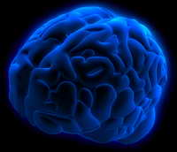
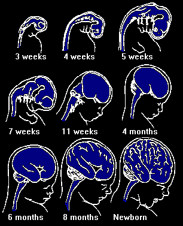
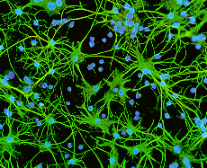

Genetic Engineering
- Genetics Introduction
- Genetic Basics
- Engineering Methods
- Human Cloning
- Eugenics
- Designer Babies
- Mapping The Genome
- Genetics and Religion
- Disease Elimination
- Longevity
- Capacity
- Adaptability
- Fashion
- Physical Attraction
- Stem Cells Revealed
- Stem Cells Controversy
- Human Rights
- The Genetic Brain
- Human Speciation
Genetic Engineering
The Human Brain

The brain is a pretty complex piece of equipment, it has lobes, and neurotransmitters and synapses and grey matter and all kinds of other stuff, but most importantly for us cells and stem cells.
In this article we will look at what the future might hold for our brain in the context of genetic engineering and related technology. What might we be able to do in the future to alter the way our brain functions in the control of our actions, responses, attitudes, skills, talents and intelligence? Why might we even want to do such a thing? What does it mean for future human evolution?
Covering the whole area of the technical side
of the brain, the mind and how we function is
far beyond the scope of this one page. So for
starters I'm going to point you in the direction
of another section of this site and some specific
pages that already cover these areas in depth
and will be helpful in understanding the concepts
presented on this page.
Human
Nature Introduction by Kathryn Milner, and the The Brain Series by Kenneth Wesson including Early
Brain Development and Learning and
The
Learning Brain.
As a quick introduction here is a quote from
The Brain Series - Early Brain Development and
Learning by Kenneth Wesson.

During embryogenesis (the process by which an embryo is converted from a fertilized cell to a full-term fetus), brain cells develop at the astounding rate of over 250,000 per minute. There are several points during the process of neurogenesis (the production of brain cells) where over 50,000 brain cells are formed every second. By the twentieth week of fetal life, over 200 billion neurons have been created.The reason this quote is offered
is to give some idea of the hugely complex process
that goes into even the initial forming of the
brain. Once we're born the brain continues to
grow and develop.
Again from Human Nature - Early Brain Development
and Learning
A fine-tuning of a child's emerging talents
occurs between three and six years of age. At
approximately age five or six, the brain has
reached 90-95% of its adult volume and is four
times its birth size. Ages three to six are
the years during which extensive internal re-wiring
takes place in the frontal lobes, the cortical
regions involved in organizing actions, planning
activities and focusing attention.
In addition to being genetically programmed,
brain growth and development are also immensely
influenced by neural plasticity. The brain constantly
modifies the connections among its one trillion
brain cells that are consistently impacted by
incidents processed consciously and unconsciously
by the brain. When new learning occurs, there
is a neurophysiological correlate that is created
to represent one's newly attained knowledge.
The unfolding events that one encounters largely
determine how much cortical growth will take
place, in what regions that growth will take
place, when, if, and where subsequent development
will occur (or not) in his blossoming young
brain. The very architecture of each human brain
is altered as a result of all newly acquired
skills and competencies. By the process of neural
plasticity (the brain's ability to undergo physical,
chemical, and structural changes as it responds
to experiences and to one's environment) the
number and density of these functional neural
pathways will be determined by the learning
experiences one encounters.
Precisely how much of our 'self' is genetically
determined and how much environmentally influenced
is still a matter of conjecture, scientist have
found evidence of genetic connections to a number
of aspects of human behaviour and traits. However
it is far from a simple case of a gene that
determines whether we are, for example bad tempered
or mellow. The evidence so far points to complex
interactions between large numbers of genes
that influence each other and play small roles
in creating several variances of a trait. It
is generally agreed that environment also plays
a major part in personality and trait formation,
working in conjunction with genes. It would
appear that a combination of both goes into
making us the person we are; our talents, our
personality, our likes and dislikes, even our
attitudes. There is scientific evidence for
genetic components to all of these elements
of our 'self' but exactly how it all works together
to make us into 'us' is not known.
That being said it is entirely imaginable that
eventually we will be able to have an influence
over our brains using genetic engineering technologies.
It is wholly conceivable that we might wish
to enhance certain talents, seek to eliminate
anti-social or criminal behaviour, change certain
aspects of our personality, increase our intelligence.
Of course these things are not without controversy
and debate.
Firstly let's look at some of the current technologies
that may well be employed in the future to genetically
alter the brain. This is a speculative exercise,
only intended to give an overview of some of
the possibilities and does not cover any of
the additional controversy that is inherent
with all of these techniques.
Adult Stem Cell Manipulation

We all have a number of neural stem cells. These are cells that are waiting to perform repair and renewal functions within the brain. They are multi-potent stem cells, which means they have the capacity to become a number of different cells. It's is conceivable that this cells could be harvested from a 'patient' manipulated or enhanced, allowed to partially differentiate and then reintroduced into the patient to effect change.Somatic Gene Transfer.
The most likely method for making alterations to the adult, changing personality, talent, behaviour, a technique that has already been flagged as having the potential to effect change. A new gene is added to a cell by using a vector such as a virus. The vector carries the gene to the targeted cell, this could mean an intelligence enhancing gene is introduced to brain cells. If somatic or body cells are targeted then the alteration is for that individual only and does not get passed on to any offspring. However another similar technique know as Gene Therapy or Germline therapy can be used to target germ cells which would cause the change to become inheritable.
Pre-Implantation Diagnosis - PGD
PGD is a method that is currently used for selection rather than alteration. Once the desired gene has been identified, embryos would be tested for the presence of that gene, once found the 'correct' embryo/s would be implanted into the mother and brought to term.
Pre-Implantation Gene Manipulation
Using a combination of PGD and Germline Therapy an embryo is taken and new genetic material is introduced. The embryo is then returned to the mother and brought to term.
The Who and Why
In 'the science' we covered the how and what.
Now about the who and why, who gets to make
the choices about changing the brains function
and why might the choices be made.
There are three possibilities for the who; a
personal choice - we choose to make a change
to ourselves, enforced - a choice is made for
us by a third party, parental choice - our parents
decide before we're born.
Personal Choice:
In the beginning of this article we looked at the formation of the brain, the connections that are made and the ways in which our talents, particularly, are formed. In our early years are brain makes connections - synapses between neurons, these synapses are formed rapidly whilst we're young but as we grow and begin to focus on specific areas unused or un-stimulated synapses die off. It is this process that creates our talents. But let's say that we're simply not happy with the twists and turns that we're made during our formative years, perhaps we really would prefer to have a talent for music than to be mathematically able. It is conceivable that we could go in for a little synapse enhancement, maybe re-stimulate some of those neural pathways that died off in our early years. It is hard to see this being a particularly controversial issue; we are making a personal choice as an adult, a choice made with free will and full awareness of the consequences. But what if certain traits became requisite? What if certain traits become socially unacceptable? Would we, as a society with a tendency to need to conform, feel pressured into manipulating ourselves into the 'perfect human being', after all the majority of people seem to go out of their way to be 'loved', we all want to be liked. How long would we be able to tolerate the potential ostracisation of not 'fitting in'? Would class oppression become redefined as those who have been engineered and those who have not?
Third Party Enforced:
Here we start to get onto some really sticky
ground. The possibility for enforced genetic
alteration of the brain starts to raise thoughts
of Nazi's and Eugenics. We have to ask questions
about who makes decisions about desirable and
undesirable behaviour, characteristics and traits.
Line drawing needs to be done, but who will
draw those lines? We will need to absolutely
clear in our understanding, as a global society
as to what is genetic determined and what is
environmentally influenced. Lets create an imaginary
scenario.
Perhaps the most desirable alteration might
be to eliminate criminal behaviour. It seems
on the surface and easy choice to make as an
example, but is it so clear cut? Firstly we
need to define what constitutes criminal behaviour,
still seems simple. Most societies have reasonably
clear laws that make those definitions for us.
So we accept the law as it stands; in this scenario
we have a mass murderer, the crime has been
admitted, all the evidence is in and yep we
caught the right person. Not too much argument
there, this is a crime, this is anti-social
behaviour. We now proceed to punishment; the
options now include brain reprogramming, sound
good? Okay lets go one step further.
Let's examine the case of a homeless shelter for
young people; the stories are myriad and the
backgrounds varied for each individual. Their
position once homeless is nearly always the
same; accessing income becomes difficult, claiming
state benefits becomes difficult, getting or
holding down a job is near to impossible. Many
find themselves resorting to theft or begging
simply to feed themselves. Here is our homeless
youth caught stealing food; many may find
it hard to condemn someone who steals food because
they are hungry, while others may argue theft is
theft. So where is the line drawn? From the perspective that society is at fault, pehaps the state could force
the mass genetic alteration to enhance compassion and reduce the numbers of us that have judgemental natures. From a different
angle, imagine that the gene combination that makes
a person likely to commit a crime becomes known.
How that criminal behaviour is likely to manifest
itself is not known and not predictable, but we
can now test each newborn for the genetic markers and predisposition
- what next? Do we gene test all new born? Do
we enforce a genetic alteration on all children
found to have that specific gene marker? What
happens to the presumption of innocence, innocent
until proven guilty? Here perhaps we have gone as far
as to say guilty without committing a crime,
guilty of having the potential to commit a crime.
Also, if we eliminate the potentially harmful combination,
might we have also eliminated some necessary human ingredient
necessary for our long-term survival as a species?
Perhaps most importantly is establishing what
role environmental factors play in the acting
on a genetic tendency to anti-social or criminal
behaviour. Current science doesn't actually
know but it is suggested that environment has
a much bigger influence than genes.
Parental Choice
We now enter the world of the designer baby.
Parents want to give their child the best possible
start in life. Parents want the best for their
children, they want them to have the best chance
at success. The child could be enhanced to have
the characteristics that the parent decides
are essential or to have enhanced intelligence,
but what constitute intelligence and how do
we decide on a talent? We talked about talents
in the section on personal choice so here let's
look at intelligence. Traditionally intelligence
has been thought of as a uni-linear concept
a general 'g' intelligence measurable using
such techniques as IQ testing, in fact Francis
Galton, often cited as an early eugenicists
is one of the first to look at intelligence
as a measurable entity.
Howard
Gardener offered an alternative to IQ testing
and a 'g' concept of intelligence in 1983 when
he published his book 'Frames of Mind: Theory
of multiple intelligences' and introduced the
concept of multi-intelligence types. Gardener
asserted that there are seven forms of intelligence:
linguistic, musical, logical-mathematical, spatial,
bodily-kinesthetic, intrapersonal (e.g., insight,
metacognition), and interpersonal (e.g., social
skills). So what is it exactly we would seek
to enhance in our child? How do we measure success?
What exactly do we mean when we talk about a
successful life? Once we can answer these question
satisfactorily we can start to decide the route
that our designer baby might take.
Scientists are finding genetic links to many
behaviours, personality, talents and aspects
of neurological formations all the time. The
arguments are far from over and far from clear.
Things we don't know far out weigh what we do.
Is there potential for positive use of such
techniques, probably yes. In the end it comes
down to how we as members of our societies choose
to go forward with the use of such technology.
If we leave it to governments and money to
decide then we are probably in for a fairly
dire future. If we take the decision making
process seriously and exert
some influence then we can contribute to the positive and acceptable use of technology.
^ Top ^